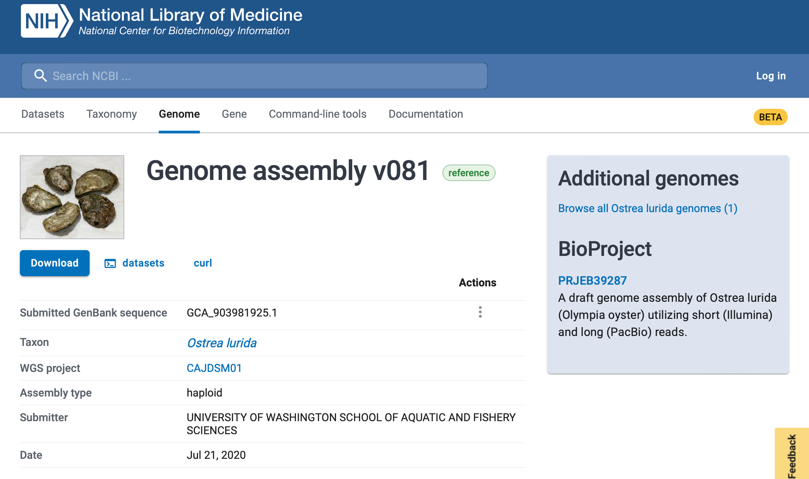
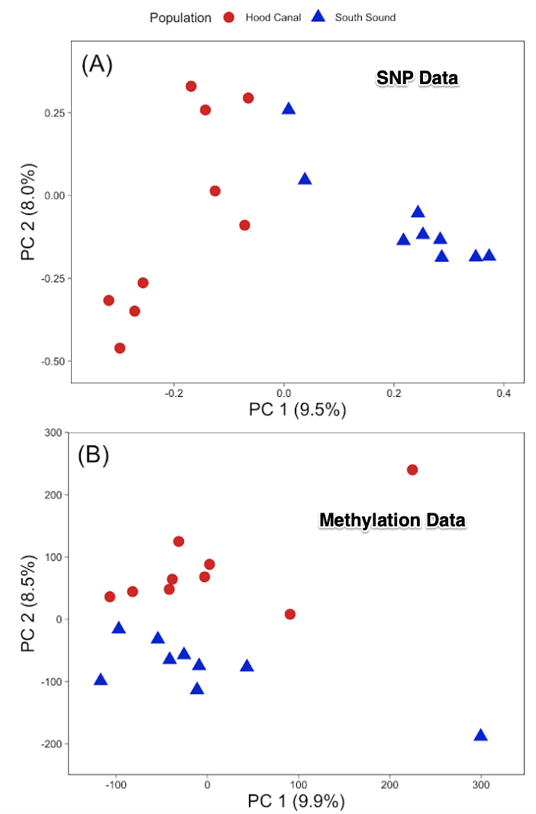
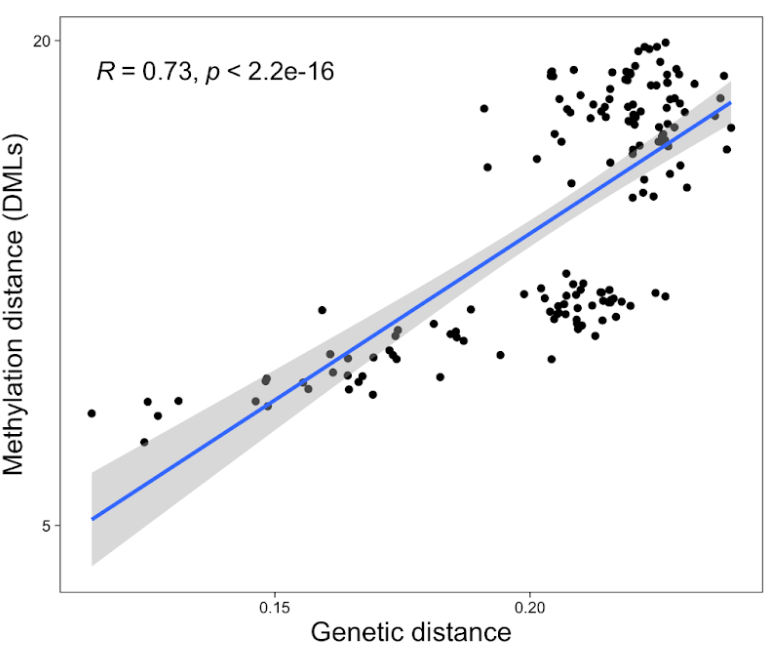
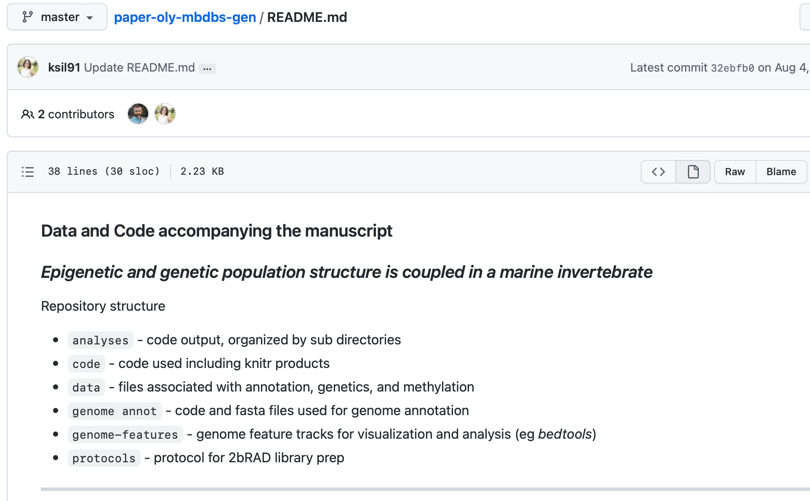
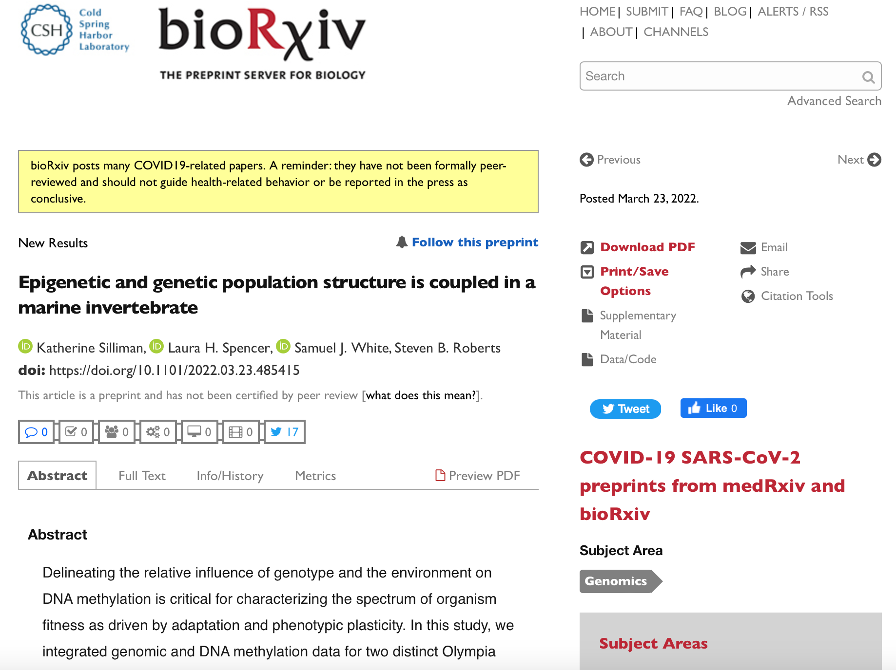
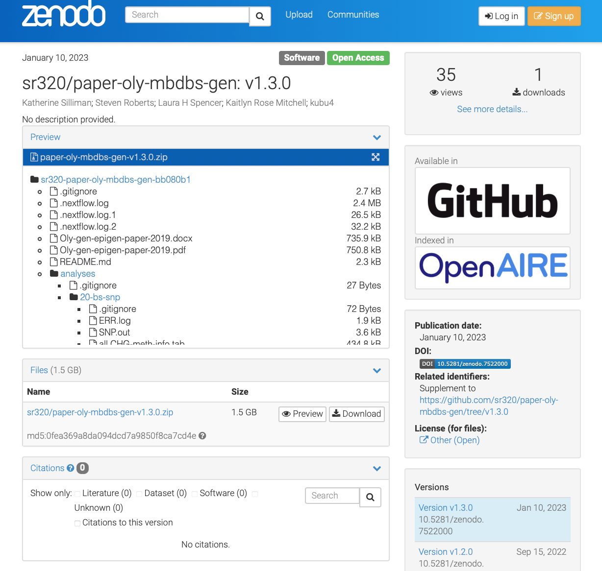
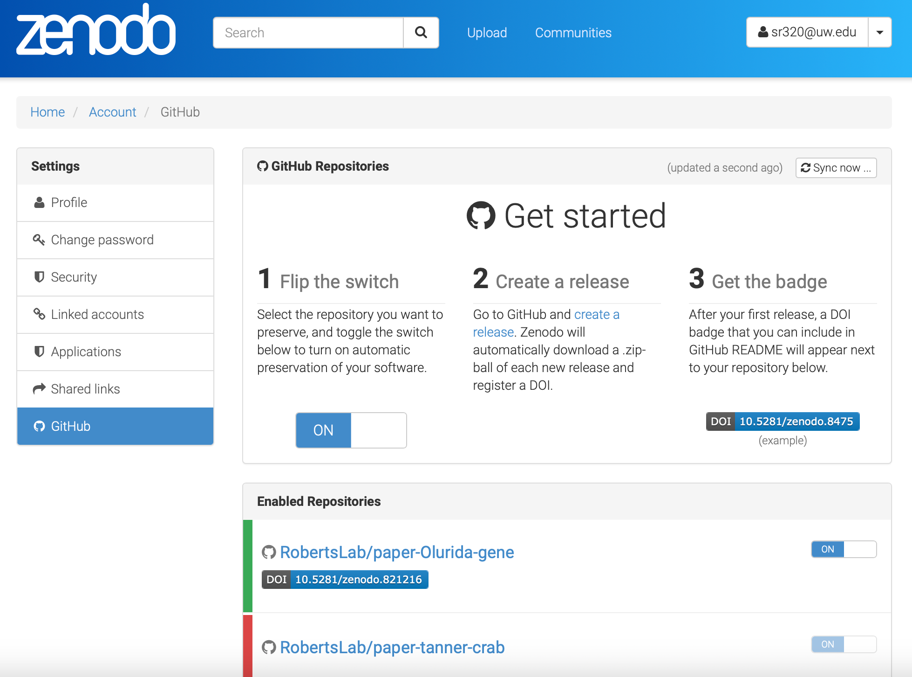
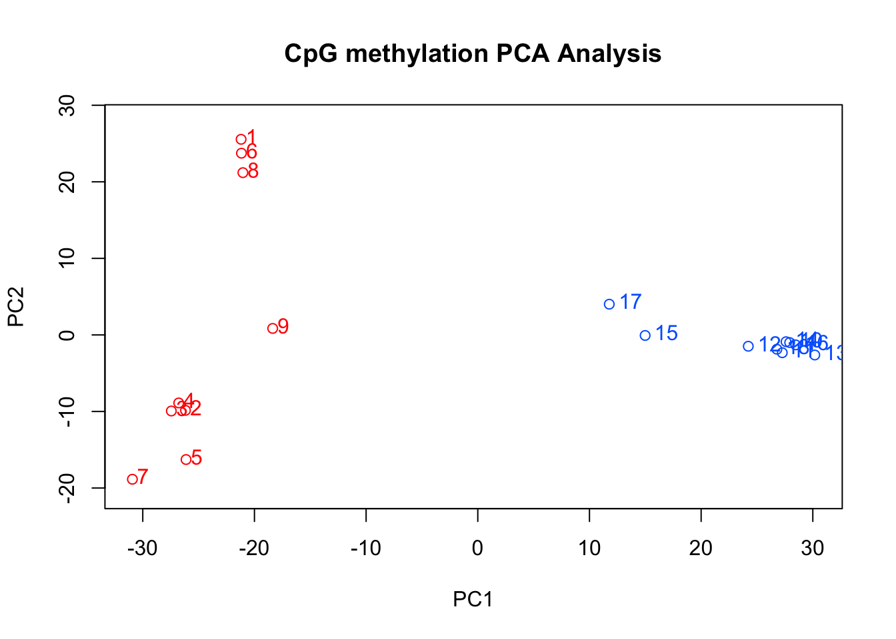

Here I will describe a recent, cool paper and try to also highlight 1) some of the material covered in our class on Proposal Writing and Professional Development, and 2) some of the features of using Quarto.
The paper characterizes the relationship of genetics and epigenetics in the Olympia oysters. The two primary authors are Katherine Silliman and Laura Spencer. Silliman et al. (2023)
Citation
Silliman, Katherine, Laura H Spencer, Samuel J White, and Steven B Roberts. 2023. “Epigenetic and Genetic Population Structure Is Coupled in a Marine Invertebrate.” Edited by Soojin Yi. Genome Biology and Evolution, February. https://doi.org/10.1093/gbe/evad013.
Paper Summary
We know that genotype and epigenetic patterns are primarily responsible for phenotype, yet there is a lack of understanding to what degree the two are linked. Here we characterized the degree by which genetic variation and DNA methylation variation are coupled in a marine invertebrate and identified potential mechanisms, with almost a third of the methylation variation attributable to genotype. This means 2/3 of methylation is not attributable to genotype.
In order to perform the analysis to see to what degree genetics and epigenetics are linked, first a genome for Ostrea lurida had to be characterized. The genome assembly (Accession # GCA_903981925.1) is 1.1 Gb in size with a contig N50 of 7.8kb. Gene prediction identified 32,210 genes, 170,394 exons, and 163,637 coding sequences.
Oysters in this experiment were from two different locations in Puget Sound but held under common conditions. There was clear genetic and epigenetic differences as determined by SNP and bisulfite treated DNA sequence (MBD-BS)

There is a clear relationship with genetic and epigenetic data

The was not only attributable to local differences (same place on genome) but also distant relationships. This schematics nicely outlines the relationship with genotype and methylation status.

So why does it matter?
Studies of plasticity and epigenetic variation among groups from different environments must also account for genetic variation, rather than attributing all differences to the environment.
Genetic variation is clearly heritable, our results suggest that some proportion of DNA methylation (and likely associated phenotypes) are also heritable.
Despite our two populations being raised in the same environment, 73% of the epigenetic variation in our system was not attributable to genetics.
Manuscript History
Samples were originally collected in 2015 with sample information documented at https://github.com/RobertsLab/project-olympia.oyster-genomic/wiki/MBD-BSseq-December-2015.
Many years later a paper was drafted in Google Docs and a manuscript specfic GitHub repo was created.

Once the paper was ready to submit, the manuscript was uploaded to BioRxiv.

Upon submitting the preprint, the manuscript was submited to Genome Biology and Evolution. As covered in class, a cover letter was submitted.
How long did the publishing process take?
**Received:**
23 March 2022
**Revision received:**
10 January 2023
**Accepted:**
24 January 2023
**Published:**
06 February 2023The manuscript when through two rounds of comments and revisions. Here are some specific comments and responses.
COMMENT: Line 19-22: I personally think that the last sentence of the abstract is a bit arbitrary / difficult to understand without reading the full paper. Maybe try to explain it a bit more / be more specific.
RESPONSE: This sentence has been changed to: “When comparing measures of genetic and epigenetic population divergence at specific genomic regions this relationship surprisingly breaks down, which has implications for the methods commonly used to study epigenetic and genetic coupling in marine invertebrates.”
COMMENT: line 86: This discussion of DNA methylation causing SNPs needs to mention the most important factor: the high mutability of mC relative to C (and basis for methylation effect on CpG o/e metric).
RESPONSE: Indeed, this is an important factor that likely influences the relationship between methylation and genetic variation. In our discussion, we present the concept of CpG depletion due to the mutability of methylated cytosines, starting at line 454. We have added text to emphasize the importance of this mechanism, which is in bold in the below excerpt:
The enrichment of CpG-SNPs associated with methylated CpGs supports the hypothesis that methylation could have preceded and induced genetic variation by altering genome stability and mutation rates (Flores et al. 2013). Methylated cytosines readily mutate to thymine by deamination, which results in an overall depletion of CpG dinucleotides (Coulondre et al. 1978; Schorderet & Gartler 1992; Bird 1980). For instance, in the Pacific oyster C. gigas mutation rate is biased towards GC -> AT, particularly at methylated CpG sites, and in coding regions (Song 2020), and genes predicted to have low levels of methylation (analyzed in-silico using the established CpG observed / expected relationship) are less genetically diverse (analyzed via SNPs) (Roberts & Gavery 2012). The higher mutability of methylated cytosines compared to those that are unmethylated is therefore a likely mechanism by which DNA methylation can influence genetic variants.
COMMENT : Even though there are many remaining questions, many previous papers have noted the connection between genetic and DNA methylation divergence. I would like to see more discussion of potential underlying mechanisms with appropriate citations. Yi 2017 and Ritter and Niederhuth 2021 are good places to start, with several relevant references cited therein.
RESPONSE: We thank the reviewer for their suggestions. We have added these two references into our discussion of potential underlying mechanisms linking genetic and methylation evolution in the Introduction and Discussion.
The research compendium (GitHub repo) was minted using Zenodo.

Important
Research compendiums need to be archived in manner where a DOI can be assigned. Common platforms to do this include Zenodo, Figshare, and Dryad.
In Zenodo it is simple as once you flip the switch, each time you create a release a version of you GitHub repo is archived with a DOI.

Speaking of GitHub, let me show-off one of the coolest featurs in Quarto, embedding code.
#installing methylKit
if (!requireNamespace("BiocManager", quietly = TRUE))
install.packages("BiocManager")
BiocManager::install(c("methylKit"))library(methylKit)load(url("https://github.com/sr320/paper-oly-mbdbs-gen/blob/master/analyses/DMLs/R-objects/dml25_counts?raw=true"))
PCA.DMLs <- PCASamples(dml25_counts, obj.return = TRUE, sd.filter = T) #Run a PCA analysis on percent methylation for all samples. methylKit uses prcomp to create the PCA matrix
nrow(PCA.DMLs$rotation)
summary(PCA.DMLs) #Look at summary statistics. The first PC explains 36.3% of variation, the second PC explains 8.5% of variation[1] 1805
Importance of components:
PC1 PC2 PC3 PC4 PC5 PC6 PC7
Standard deviation 25.6046 12.36545 10.22222 9.55975 9.44232 9.24574 9.1619
Proportion of Variance 0.3632 0.08471 0.05789 0.05063 0.04939 0.04736 0.0465
Cumulative Proportion 0.3632 0.44792 0.50581 0.55644 0.60584 0.65320 0.6997
PC8 PC9 PC10 PC11 PC12 PC13 PC14
Standard deviation 8.73641 8.07654 7.86346 7.77250 7.45169 7.43264 6.88155
Proportion of Variance 0.04229 0.03614 0.03426 0.03347 0.03076 0.03061 0.02624
Cumulative Proportion 0.74199 0.77813 0.81238 0.84585 0.87662 0.90722 0.93346
PC15 PC16 PC17 PC18
Standard deviation 6.6765 6.37415 5.90774 1.251e-14
Proportion of Variance 0.0247 0.02251 0.01934 0.000e+00
Cumulative Proportion 0.9581 0.98066 1.00000 1.000e+00Practical Aspects of Posting
How are you including images?
knitr::include_graphics("img/skitch.gif")
But what is the code in the Quarto file to render what we are seeing above?
{r skitch, echo = TRUE, out.width = "70%", fig.align = "center"}
knitr::include_graphics("img/skitch.gif")Essentially you just need to include an image (here it is within the post directory) and use R code to display, highly leveraging code chunk options.
Explore the entirety of the code behind this page at https://github.com/sr320/tumbling-oysters/blob/main/posts/cool-paper/index.qmd
References
Silliman, Katherine, Laura H Spencer, Samuel J White, and Steven B Roberts. 2023. “Epigenetic and Genetic Population Structure Is Coupled in a Marine Invertebrate.” Edited by Soojin Yi. Genome Biology and Evolution, February. https://doi.org/10.1093/gbe/evad013.